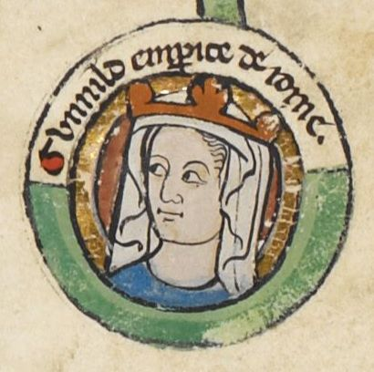
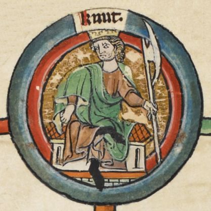
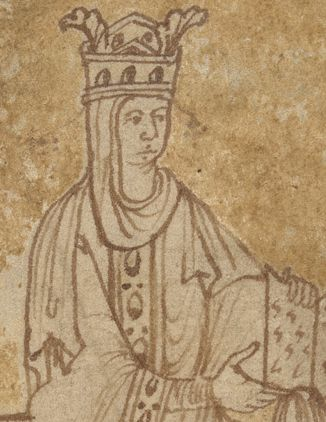

Gunhild von Dänemark
Foto - 1 (Grab - Übersichtsaufnahme)

Foto - 2 (Grab - im Langschiff)

Foto - 3 (Grab - im Langschiff)

Foto - 4 (Grab - im Langschiff)

Foto - 5 (Klosterruine - Infotafel) Detail


Foto - 6 (Grab - im Langschiff)

Foto - 7 (Grab - im Langschiff)

Foto - 8 (Klosterruine - Übersichtsaufnahme)

Foto - 9 (Klosterruine - Nahaufnahme)

Foto - 10 (Grab - Text der Gabplatte)

Gunhild von Dänemark - Letztes Update 20.11.2023

Bildquelle: British Library - Royal MS 14 B VI - f.4r
*1019 - 18.7.1038 (Nähe der Adriaküste, begraben im Kloster Limburg bei Bad Dürkheim) (Wikipedia)
Einzige Tochter von
Vater:
Knut der Große, König von Dänemark, England und Norwegen
*um 995 - 12. November 1035, Shaftesbury (Dorset)/ England (Wikipedia)

Bildquelle: British Library - Royal MS 14 B VI - f.4r
Mutter:
· Emma/Aelgifu, Tochter Herzog Richards I. von der Normandie
· *um 987 - 06.03.1052 (Wikipedia)

Bildquelle: "Encomium Emmae Reginae" - British Library MS Add 33241
Gunhild verheiratet seit Pfingsten 1036 mit:
Heinrich III. (Sohn des salischen Kaisers Konrad II., seit 14.04.1028 König, seit 25.12.1046 bis zum Tod war er auch Kaiser)*28. 10.1017 - 05.10.1056 in Bodfeld/Harz (Begraben im Dom zu Speyer) (Wikipedia)
Kind:
Beatrix - am 24.06.1046 auf dem Hoftag zu Merseburg von ihrem Vater Heinrich III. zur Äbtissin im Stift Quedlinburg geweiht worden. Sie war auch Äbtissin im Stift Gandersheim und im Stift Vreden.
*(Ende) 1037 - 13.7.1061 (Wikipedia)
Vom 18.09.2022 bis zum 26.02.2023 findet in Mannheim im Reiss-Engelhorn-Museum die Ausstellung "Die Normannen" statt. In dem Zusammenhang gibt es auch die gesonderte Webseite "Die Normannen und die Pfalz?", die sich dem Thema Gunhild von Dänemark und ihrer Grabstätte annimmt.
Zu der Ausstellung gibt es beim Verlag Schnell & Steiner einen wissenschaftlichen Aufsatzband und einen reich illustrierten Katalog zu den etwa 350 Exponaten. Sie präsentieren das faszinierende Thema, das wie kaum ein anderes Regionen, Nationen, Kulturen und Traditionen verbindet. Beide Bände präsentieren die normannische Welt des 8. bis 13. Jahrhunderts, die von Skandinavien nach Osteuropa und über das westliche Europa bis ans Mittelmeer reichte.
Erst durch meinen Besuch der Ausstellung "Die Salier. Macht im Wandel" am 24.09.2011 in Speyer (Dauer vom 10.04. - 30.10.2011) habe ich erfahren, dass die Tochter des dänischen Königs Knut der Große, Gunhild, die Ehefrau des (späteren) salischen Kaisers Heinrich III., des Sohnes des salischen Kaisers Konrad II., war und auch noch in meiner Nähe begraben wurde. Natürlich habe ich dem Grab von Gunhild von Dänemark alsbald einen Besuch abgestattet. Die am 09.10.2011 von mir gefertigten Fotos habe ich links eingestellt.
Auszug aus "Ausgewählte Quellen zur deutschen Geschichte des Mittelalters, Freiherr vom Stein-Gedächtnisausgabe, Band XI, Quellen des 9. und 11. Jahrhunderts zur Geschichte der Hamburgischen Kirche und des Reiches, Wipo Taten Kaiser Konrads II., 5. Auflage 1978":
Seite 597 - Am 18.05.1035 beim Bamberger Hoftag Aufgebot und Bündnis mit König Knut (Verlobung von dessen Tochter Gunhild mit Heinrich III., Abtretung der deutschen Rechte auf die Mark Schleswig)
Seite 599 - Im Jahre des Herrn 1036 ließ des Kaisers Sohn, König Heinrich, Gunhild, die Tochter des Angelnkönigs Knut, zur Königin weihen und nahm sie auf einem königlichen Hochzeitsfeste zur Ehe (Vermählung am 29. Juni 1036 in Nimwegen).
Seite 605 - Da erlag am 18. Juli (1038) König Heinrichs Gemahlin, Königin Gunhild, erst an der Schwelle des Lebens schon dem Zugriff des Todes; nur eine einzige kleine Tochter hinterließ sie von dem Könige (Beatrix, 1045 zur Äbtissin von Quedlinburg ernannt, 24. Juni 1046 geweiht, 13. Juli 1062); der Vater hat sie später Christus vermählt und zur Äbtissin weihen lassen... Der Königin zarter und feiner Leib wurde einbalsamiert; König und Kaiserin geleiteten ihn nach Deutschland und ließen ihn in der Probstei Limburg (Familienkloster an der Hardt bei Dürkheim) beisetzen.
Die Klosterruine Limburg als 3-D-Modell findet man hier - Link - 3D Warehouse & SketchUp
Das Video - 05.04 Minuten - mit dem Titel "Klosterruine Limburg 4K" aus dem Jahr 2022 von Michael Kilian/CineBlick kann auf YouTube angeschaut werden.
Navi-Daten für die Klosteruine Limburg:
49.456389°, 8.146389°
Anschrift für die Klosteruine Limburg:
67098 Bad Dürkheim, Luitpoldweg 1
Interessante Internetfunde:
Bauforschung an der Kirchenruine der ehemaligen Benediktiner-Abtei Limburg an der Haardt - Projekt Juni 2020 Mai 2022 - danach soll es wohl eine umfassende Abhandlung dazu geben, die sich nicht nur an Baupezialisten richtet
Sanierung des Klosters Limburg bis 2025 - zum 1000-jährigen Jubiläum
Wikipedia zum Kloster Limburg
deWiki - Kloster Limburg
Literaturhinweise:
Kloster Limburg an der Haardt - von Wilhelm Manchot (Architekt) - 1892